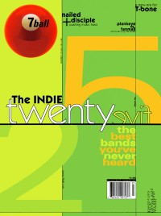

CMnexus
: Contemporary Christian culture, music, and media.
|
|
7ball, Jul / Aug 1999, #25
| Cover |
|---|
|  | | Writers in this Issue |
|---|
Bobb-Semple, Ceita
Ewald, Dan
Gladhill, Thom
Jenison, David A.
Knight, Steve
Lockhart, Teresa
MacIntosh, Dan
Newcomb, Brian Quincy
Sadowski, Michael
Sondova, Amy
Strang, Cameron
Well, Chris
|
Top 25 Indie bands of 1999Cover Feature:
- "Names You Probably Know (But Need To Check Out Their New Stuff)" by Chris Well
- "The Indie 25" by Cameron Strang
Article:
- "They're Like Sosa and McGuire" by David A. Jenison
- "Red Revolution" by Cameron Strang
- "Seasons" by Teresa Lockhart
- "Crossing Over" by Amy Sondova
Bankshots:Spotlight:Album Review:blah, blah, blah: "Things Change" by Chris Well
This issue of 7ball came bundled with GAS #14. |
|